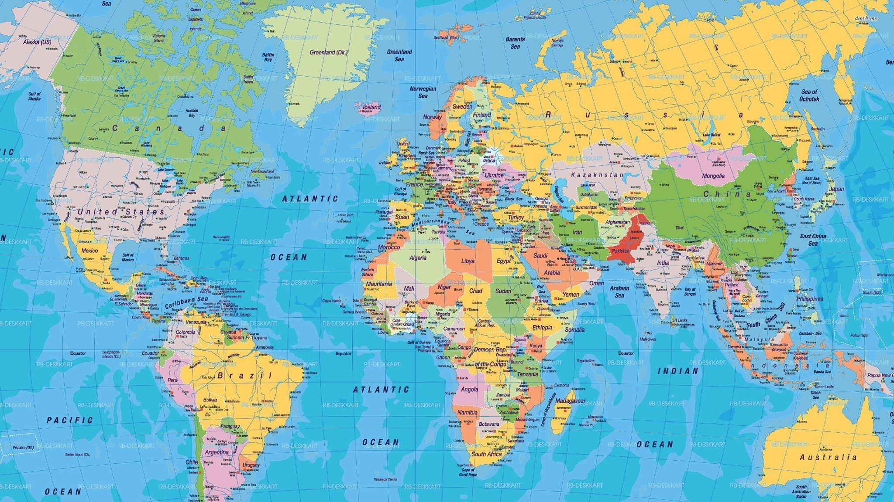

(Before we start press play)
Hello, My name is Krists Ozols, I'm 19 currently and my favourite colour is red but we can get more into about me if you click Here. Anyway I'm the guy who made a website about himself lol!
There are only a handful of places that I've traveled to. I come from Latvia, Now I live in England(Unted Kingdom), I've traveled to Netherlands, Poland, and Spain. I would love to travel the whole of europe, and after I would like to start exploring Asia. I would love to live in different places for couple of years. I would start with California, Los Angeles (USA), after I would like to live back in my home country which is Latvia. Finally when I retire, I would Love to live in Barcelona(Spain).
Find out More about meHere